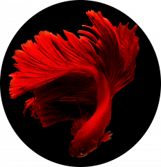

Ohayo ~

Hi, I'm Blue even though I'm a red colored fish, but don't get me wrong I'm not a goldfish!
Anyway, welcome to lostsh's profile, and there you go, it’s pretty much everything, it's not that much interesting.
It seems that dear lostsh likes to schedule various things more or less interesting, you can take a look at his twitter or at his github account.
Hello, curious young creature Blue tends to monopolize the talk, doesn't he?
Well, since he's introduced me before, I'm not going to do it again.
I would just like to clarify something about me.
I am a student in computer science and development.
Big fan of games like Pac-Man, Tetris, Space Invaders or Pong.
Passionate about arduino, and raspberrypi, so I enjoy the low level (mostly C99), I enjoy the web (HTML, JS, CSS, PHP) and I also like coding in Java, C# and Python.
Do not hesitate to contact me at this address.
Tchuss ;p
¬‿¬ ᓚᘏᗢ
Follow the White Rabbit.